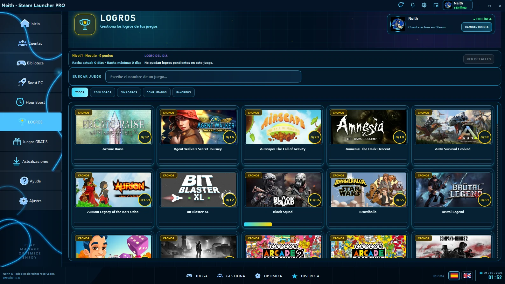

01
Interfaz clara
Jerarquía visual compacta para localizar estados y acciones sin perder contexto.
Explora tu biblioteca y trabaja con logros desde una interfaz visual optimizada para catálogos grandes.

No es una herramienta aislada: comparte navegación, lenguaje visual y experiencia con el resto de Neith.
Jerarquía visual compacta para localizar estados y acciones sin perder contexto.
El módulo convive con cuentas, biblioteca y el resto del ecosistema Neith.
La interfaz está pensada para diferentes resoluciones y escalados de Windows.